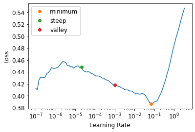

Notes on fastai Book Ch. 6
ai
fastai
notes
pytorch
Chapter 6 covers multi-label classification and image regression.
This post is part of the following series:
Multi-Label Classification
- the problem of identifying the categories of objects in images that may not contain exactly one type of object
- there may be more than one kind of object or none at all that belong to the target classes
- single-label classifiers cannot properly handle input that either does not contain an object of a target class or contains multiple objects of a different target classes
- a single-label classifier trained to recognize cats and dogs could not handle an image that contains both cats and dogs
- models deployed in production are more likely to encounter input with zero matches or more than one match
The Data
from fastai.vision.all import *The PASCAL Visual Object Classes Challenge 2007 Dataset
- http://host.robots.ox.ac.uk/pascal/VOC/voc2007/
- contains twenty classes
- multiple classes may be present in the same image
- classification labels are stored in a CSV file
path = untar_data(URLs.PASCAL_2007)
pathPath('/home/innom-dt/.fastai/data/pascal_2007')path.ls()(#8) [Path('/home/innom-dt/.fastai/data/pascal_2007/segmentation'),Path('/home/innom-dt/.fastai/data/pascal_2007/test'),Path('/home/innom-dt/.fastai/data/pascal_2007/train.csv'),Path('/home/innom-dt/.fastai/data/pascal_2007/valid.json'),Path('/home/innom-dt/.fastai/data/pascal_2007/train'),Path('/home/innom-dt/.fastai/data/pascal_2007/train.json'),Path('/home/innom-dt/.fastai/data/pascal_2007/test.csv'),Path('/home/innom-dt/.fastai/data/pascal_2007/test.json')]df = pd.read_csv(path/'train.csv')
df.head()| fname | labels | is_valid | |
|---|---|---|---|
| 0 | 000005.jpg | chair | True |
| 1 | 000007.jpg | car | True |
| 2 | 000009.jpg | horse person | True |
| 3 | 000012.jpg | car | False |
| 4 | 000016.jpg | bicycle | True |
Class lables are stored in a space-delimited string
Pandas and DataFrames
- https://pandas.pydata.org/docs/index.html
- https://pandas.pydata.org/docs/reference/api/pandas.DataFrame.html
# Access rows and columns using the `iloc` property
df.iloc[:,0]0 000005.jpg
1 000007.jpg
2 000009.jpg
3 000012.jpg
4 000016.jpg
...
5006 009954.jpg
5007 009955.jpg
5008 009958.jpg
5009 009959.jpg
5010 009961.jpg
Name: fname, Length: 5011, dtype: objectdf.iloc[0,:]
# Trailing :s are always optional (in numpy, pytorch, pandas, etc.),
# so this is equivalent:
df.iloc[0]fname 000005.jpg
labels chair
is_valid True
Name: 0, dtype: object# Get a column by name
df['fname']0 000005.jpg
1 000007.jpg
2 000009.jpg
3 000012.jpg
4 000016.jpg
...
5006 009954.jpg
5007 009955.jpg
5008 009958.jpg
5009 009959.jpg
5010 009961.jpg
Name: fname, Length: 5011, dtype: object# Initialize a new data frame using a dictionary
tmp_df = pd.DataFrame({'a':[1,2], 'b':[3,4]})
tmp_df| a | b | |
|---|---|---|
| 0 | 1 | 3 |
| 1 | 2 | 4 |
# Perform calculations using columns
tmp_df['c'] = tmp_df['a']+tmp_df['b']
tmp_df| a | b | c | |
|---|---|---|---|
| 0 | 1 | 3 | 4 |
| 1 | 2 | 4 | 6 |
Constructing a DataBlock
- Dataset: a collection that returns a tuple of your independent and dependent variable for a single item
- DataLoader: An iterator that provides a stream of mini-batches, where each mini-batch is a tuple of a batch of independent variables and a batch of dependent variables
- Datasets: an iterator that contains a training Dataset and a validation Dataset
- DataLoaders: an object that contains a training DataLoader and a validation DataLoader
- By default, a DataBlock assumes we have an input and a target
Python Lambda Functions
- great for quickly iterating
- not compatible with serialization
- How to Use Python Lambda Functions
One-hot encoding: using a vector of 0s, with a 1 in each location that is represented in the data
# Start with a data block created with no parameters
dblock = DataBlock()# Add a Datasets object using the DataFrame
dsets = dblock.datasets(df)len(dsets.train),len(dsets.valid)(4009, 1002)# Grabs the same thing twice
# Need to specify an input and a target
x,y = dsets.train[0]
x,y(fname 008663.jpg
labels car person
is_valid False
Name: 4346, dtype: object,
fname 008663.jpg
labels car person
is_valid False
Name: 4346, dtype: object)x['fname']'008663.jpg'# Tell the DataBlock how to extract the input and target from the DataFrame
# Using lamda functions
dblock = DataBlock(get_x = lambda r: r['fname'], get_y = lambda r: r['labels'])
dsets = dblock.datasets(df)
dsets.train[0]('005620.jpg', 'aeroplane')Note: Do not use lambda functions if you need to export the Learner
# Tell the DataBlock how to extract the input and target from the DataFrame
# Using standard functions
def get_x(r): return r['fname']
def get_y(r): return r['labels']
dblock = DataBlock(get_x = get_x, get_y = get_y)
dsets = dblock.datasets(df)
dsets.train[0]('002549.jpg', 'tvmonitor')Note: Need the full file path for the dependent variable and need to split the dependent variables on the space character
def get_x(r): return path/'train'/r['fname']
def get_y(r): return r['labels'].split(' ')
dblock = DataBlock(get_x = get_x, get_y = get_y)
dsets = dblock.datasets(df)
dsets.train[0](Path('/home/innom-dt/.fastai/data/pascal_2007/train/002844.jpg'), ['train'])ImageBlock
MultiCategoryBlock
- https://docs.fast.ai/data.block.html#MultiCategoryBlock
- A TransformBlock for multi-label categorical targets
- Uses One-hot encoding
- Expects to receive a list of strings
ImageBlock<function fastai.vision.data.ImageBlock(cls=<class 'fastai.vision.core.PILImage'>)>MultiCategoryBlock<function fastai.data.block.MultiCategoryBlock(encoded=False, vocab=None, add_na=False)>dblock = DataBlock(blocks=(ImageBlock, MultiCategoryBlock),
get_x = get_x, get_y = get_y)
dsets = dblock.datasets(df)
dsets.train[0](PILImage mode=RGB size=500x375,
TensorMultiCategory([0., 0., 0., 0., 0., 0., 0., 0., 0., 0., 0., 1., 0., 0., 0., 0., 0., 0., 0., 0.]))# Check which object class is represented by the above one-hot encoding
idxs = torch.where(dsets.train[0][1]==1.)[0]
dsets.train.vocab[idxs](#1) ['dog']# Define a function to split the dataset based on the is_valid column
def splitter(df):
train = df.index[~df['is_valid']].tolist()
valid = df.index[df['is_valid']].tolist()
return train,valid
dblock = DataBlock(blocks=(ImageBlock, MultiCategoryBlock),
splitter=splitter,
get_x=get_x,
get_y=get_y)
dsets = dblock.datasets(df)
dsets.train[0](PILImage mode=RGB size=500x333,
TensorMultiCategory([0., 0., 0., 0., 0., 0., 1., 0., 0., 0., 0., 0., 0., 0., 0., 0., 0., 0., 0., 0.]))dblock = DataBlock(blocks=(ImageBlock, MultiCategoryBlock),
splitter=splitter,
get_x=get_x,
get_y=get_y,
item_tfms = RandomResizedCrop(128, min_scale=0.35))
dls = dblock.dataloaders(df)dls.show_batch(nrows=1, ncols=3)
dblock.summary(df)Setting-up type transforms pipelines
Collecting items from fname labels is_valid
0 000005.jpg chair True
1 000007.jpg car True
2 000009.jpg horse person True
3 000012.jpg car False
4 000016.jpg bicycle True
... ... ... ...
5006 009954.jpg horse person True
5007 009955.jpg boat True
5008 009958.jpg person bicycle True
5009 009959.jpg car False
5010 009961.jpg dog False
[5011 rows x 3 columns]
Found 5011 items
2 datasets of sizes 2501,2510
Setting up Pipeline: get_x -> PILBase.create
Setting up Pipeline: get_y -> MultiCategorize -- {'vocab': None, 'sort': True, 'add_na': False} -> OneHotEncode -- {'c': None}
Building one sample
Pipeline: get_x -> PILBase.create
starting from
fname 000012.jpg
labels car
is_valid False
Name: 3, dtype: object
applying get_x gives
/home/innom-dt/.fastai/data/pascal_2007/train/000012.jpg
applying PILBase.create gives
PILImage mode=RGB size=500x333
Pipeline: get_y -> MultiCategorize -- {'vocab': None, 'sort': True, 'add_na': False} -> OneHotEncode -- {'c': None}
starting from
fname 000012.jpg
labels car
is_valid False
Name: 3, dtype: object
applying get_y gives
[car]
applying MultiCategorize -- {'vocab': None, 'sort': True, 'add_na': False} gives
TensorMultiCategory([6])
applying OneHotEncode -- {'c': None} gives
TensorMultiCategory([0., 0., 0., 0., 0., 0., 1., 0., 0., 0., 0., 0., 0., 0., 0., 0., 0., 0., 0., 0.])
Final sample: (PILImage mode=RGB size=500x333, TensorMultiCategory([0., 0., 0., 0., 0., 0., 1., 0., 0., 0., 0., 0., 0., 0., 0., 0., 0., 0., 0., 0.]))
Collecting items from fname labels is_valid
0 000005.jpg chair True
1 000007.jpg car True
2 000009.jpg horse person True
3 000012.jpg car False
4 000016.jpg bicycle True
... ... ... ...
5006 009954.jpg horse person True
5007 009955.jpg boat True
5008 009958.jpg person bicycle True
5009 009959.jpg car False
5010 009961.jpg dog False
[5011 rows x 3 columns]
Found 5011 items
2 datasets of sizes 2501,2510
Setting up Pipeline: get_x -> PILBase.create
Setting up Pipeline: get_y -> MultiCategorize -- {'vocab': None, 'sort': True, 'add_na': False} -> OneHotEncode -- {'c': None}
Setting up after_item: Pipeline: RandomResizedCrop -- {'size': (128, 128), 'min_scale': 0.35, 'ratio': (0.75, 1.3333333333333333), 'resamples': (2, 0), 'val_xtra': 0.14, 'max_scale': 1.0, 'p': 1.0} -> ToTensor
Setting up before_batch: Pipeline:
Setting up after_batch: Pipeline: IntToFloatTensor -- {'div': 255.0, 'div_mask': 1}
Building one batch
Applying item_tfms to the first sample:
Pipeline: RandomResizedCrop -- {'size': (128, 128), 'min_scale': 0.35, 'ratio': (0.75, 1.3333333333333333), 'resamples': (2, 0), 'val_xtra': 0.14, 'max_scale': 1.0, 'p': 1.0} -> ToTensor
starting from
(PILImage mode=RGB size=500x333, TensorMultiCategory([0., 0., 0., 0., 0., 0., 1., 0., 0., 0., 0., 0., 0., 0., 0., 0., 0., 0., 0., 0.]))
applying RandomResizedCrop -- {'size': (128, 128), 'min_scale': 0.35, 'ratio': (0.75, 1.3333333333333333), 'resamples': (2, 0), 'val_xtra': 0.14, 'max_scale': 1.0, 'p': 1.0} gives
(PILImage mode=RGB size=128x128, TensorMultiCategory([0., 0., 0., 0., 0., 0., 1., 0., 0., 0., 0., 0., 0., 0., 0., 0., 0., 0., 0., 0.]))
applying ToTensor gives
(TensorImage of size 3x128x128, TensorMultiCategory([0., 0., 0., 0., 0., 0., 1., 0., 0., 0., 0., 0., 0., 0., 0., 0., 0., 0., 0., 0.]))
Adding the next 3 samples
No before_batch transform to apply
Collating items in a batch
Applying batch_tfms to the batch built
Pipeline: IntToFloatTensor -- {'div': 255.0, 'div_mask': 1}
starting from
(TensorImage of size 4x3x128x128, TensorMultiCategory of size 4x20)
applying IntToFloatTensor -- {'div': 255.0, 'div_mask': 1} gives
(TensorImage of size 4x3x128x128, TensorMultiCategory of size 4x20)Binary Cross-Entropy
- Getting Model Activations
- it is important to know how to manually get a mini-batch, pass it into a model, and look at the activations
- Can’t directly use nll_loss or softmax for a one-hot-encoded dependent variable
- softmax requires all predictions sum to 1 and tends to push one activation to be much larger than all the other
- not desirable when there may be multiple objects or none at all in a single image
- nll_loss returns the value of just one activation
- softmax requires all predictions sum to 1 and tends to push one activation to be much larger than all the other
- binary cross-entropy combines mnist_loss with log
learn = cnn_learner(dls, resnet18)to_cpu(b)
- https://docs.fast.ai/torch_core.html#to_cpu
- Recursively map lists of tensors in
bto the cpu.
to_cpu<function fastai.torch_core.to_cpu(b)>x,y = to_cpu(dls.train.one_batch())
activs = learn.model(x)
activs.shapetorch.Size([64, 20])activs[0]TensorBase([ 0.5674, -1.2013, 4.5409, -1.5284, -0.6600, 0.0999, -2.4757, -0.8773, -0.2934, -1.4746, -0.1738, 2.1763, -3.4473, -1.1407, 0.1783, -1.6922, -2.3396, 0.7602, -1.4213, -0.4334],
grad_fn=<AliasBackward0>)Note: The raw model activations are not scaled between [0,1]
def binary_cross_entropy(inputs, targets):
inputs = inputs.sigmoid()
return -torch.where(targets==1, inputs, 1-inputs).log().mean()binary_cross_entropy(activs, y)TensorMultiCategory(1.0367, grad_fn=<AliasBackward0>)nn.BCELoss
- https://pytorch.org/docs/stable/generated/torch.nn.BCELoss.html#torch.nn.BCELoss
- measures the binary cross entropy between the predictions and target
nn.BCEWithLogitsLoss
- https://pytorch.org/docs/stable/generated/torch.nn.BCEWithLogitsLoss.html#torch.nn.BCEWithLogitsLoss
- combines a sigmoid layer and the BCELoss in a single class
nn.BCEWithLogitsLosstorch.nn.modules.loss.BCEWithLogitsLossloss_func = nn.BCEWithLogitsLoss()
loss = loss_func(activs, y)
lossTensorMultiCategory(1.0367, grad_fn=<AliasBackward0>)Python Partial Functions
- https://docs.python.org/3/library/functools.html#functools.partial
- return a new partial object that will behave like a function with the positional and keyword arguments
- allows us to bind a function with some arguments or keyword arguments
partialfunctools.partialdef say_hello(name, say_what="Hello"): return f"{say_what} {name}."
say_hello('Jeremy'),say_hello('Jeremy', 'Ahoy!')('Hello Jeremy.', 'Ahoy! Jeremy.')f = partial(say_hello, say_what="Bonjour")
f("Jeremy"),f("Sylvain")('Bonjour Jeremy.', 'Bonjour Sylvain.')accuracy_multi
- https://docs.fast.ai/metrics.html#accuracy_multi
- compute accuracy using a threshold value
accuracy_multi<function fastai.metrics.accuracy_multi(inp, targ, thresh=0.5, sigmoid=True)>learn = cnn_learner(dls, resnet50, metrics=partial(accuracy_multi, thresh=0.2))
learn.fine_tune(3, base_lr=3e-3, freeze_epochs=4)| epoch | train_loss | valid_loss | accuracy_multi | time |
|---|---|---|---|---|
| 0 | 0.942860 | 0.704590 | 0.234223 | 00:06 |
| 1 | 0.821557 | 0.550972 | 0.293825 | 00:06 |
| 2 | 0.604402 | 0.202164 | 0.813645 | 00:06 |
| 3 | 0.359336 | 0.122809 | 0.943466 | 00:06 |
| epoch | train_loss | valid_loss | accuracy_multi | time |
|---|---|---|---|---|
| 0 | 0.135016 | 0.122502 | 0.944601 | 00:07 |
| 1 | 0.118378 | 0.107208 | 0.950478 | 00:07 |
| 2 | 0.098511 | 0.103568 | 0.951613 | 00:07 |
learn.metrics = partial(accuracy_multi, thresh=0.1)
learn.validate()(#2) [0.10356765240430832,0.9294222593307495]learn.metrics = partial(accuracy_multi, thresh=0.99)
learn.validate()(#2) [0.10356765240430832,0.9427291750907898]preds,targs = learn.get_preds()accuracy_multi(preds, targs, thresh=0.9, sigmoid=False)TensorBase(0.9566)# Try a few different threshold values to see which works best
xs = torch.linspace(0.05,0.95,29)
accs = [accuracy_multi(preds, targs, thresh=i, sigmoid=False) for i in xs]
plt.plot(xs,accs);
Regression
- a model is defined by it independent and dependent variables, along with its loss function
- image regression: the independent variable is an image and the dependent variable is one or more floating point numbers
- key point model:
- a key point refers to a specific location represented in an image
Assemble the Data
BIWI Kinect Head Pose Database
- https://icu.ee.ethz.ch/research/datsets.html
- over 15k images of 20 people recorded with a Kinect while turning their heads around freely
- Depth and rgb images are provided for each frame
- ground in the form of the 3D location of the head and its rotation angles
- contains 24 directories numbered from 01 to 24 which correspond to the different people photographed
- each directory has a corresponding .obj file
- each directory contains .cal files containing the calibration data for the depth and color cameras
- each image has a corresponding _pose.txt file containing the location of center of the head in 3D and the head rotation encoded as 3D rotation matrix
path = untar_data(URLs.BIWI_HEAD_POSE)
pathPath('/home/innom-dt/.fastai/data/biwi_head_pose')path.ls().sorted()(#50) [Path('/home/innom-dt/.fastai/data/biwi_head_pose/01'),Path('/home/innom-dt/.fastai/data/biwi_head_pose/01.obj'),Path('/home/innom-dt/.fastai/data/biwi_head_pose/02'),Path('/home/innom-dt/.fastai/data/biwi_head_pose/02.obj'),Path('/home/innom-dt/.fastai/data/biwi_head_pose/03'),Path('/home/innom-dt/.fastai/data/biwi_head_pose/03.obj'),Path('/home/innom-dt/.fastai/data/biwi_head_pose/04'),Path('/home/innom-dt/.fastai/data/biwi_head_pose/04.obj'),Path('/home/innom-dt/.fastai/data/biwi_head_pose/05'),Path('/home/innom-dt/.fastai/data/biwi_head_pose/05.obj')...](path/'01').ls().sorted()(#1000) [Path('/home/innom-dt/.fastai/data/biwi_head_pose/01/depth.cal'),Path('/home/innom-dt/.fastai/data/biwi_head_pose/01/frame_00003_pose.txt'),Path('/home/innom-dt/.fastai/data/biwi_head_pose/01/frame_00003_rgb.jpg'),Path('/home/innom-dt/.fastai/data/biwi_head_pose/01/frame_00004_pose.txt'),Path('/home/innom-dt/.fastai/data/biwi_head_pose/01/frame_00004_rgb.jpg'),Path('/home/innom-dt/.fastai/data/biwi_head_pose/01/frame_00005_pose.txt'),Path('/home/innom-dt/.fastai/data/biwi_head_pose/01/frame_00005_rgb.jpg'),Path('/home/innom-dt/.fastai/data/biwi_head_pose/01/frame_00006_pose.txt'),Path('/home/innom-dt/.fastai/data/biwi_head_pose/01/frame_00006_rgb.jpg'),Path('/home/innom-dt/.fastai/data/biwi_head_pose/01/frame_00007_pose.txt')...]# recursivley get all images in the 24 subdirectories
img_files = get_image_files(path)
# get the file names for the corresponding pose.txt files
def img2pose(x): return Path(f'{str(x)[:-7]}pose.txt')
pose_file = img2pose(img_files[0])
pose_filePath('/home/innom-dt/.fastai/data/biwi_head_pose/22/frame_00304_pose.txt')!cat $pose_file0.999485 -0.00797222 -0.031067
-0.00416483 0.928156 -0.372168
0.031802 0.372106 0.927645
62.3638 96.2159 979.839 im = PILImage.create(img_files[0])
im.shape(480, 640)im.to_thumb(160)np.genfromtxt
- https://numpy.org/doc/stable/reference/generated/numpy.genfromtxt.html
- Load data from a text file
np.genfromtxt<function numpy.genfromtxt(fname, dtype=<class 'float'>, comments='#', delimiter=None, skip_header=0, skip_footer=0, converters=None, missing_values=None, filling_values=None, usecols=None, names=None, excludelist=None, deletechars=" !#$%&'()*+,-./:;<=>?@[\\]^{|}~", replace_space='_', autostrip=False, case_sensitive=True, defaultfmt='f%i', unpack=None, usemask=False, loose=True, invalid_raise=True, max_rows=None, encoding='bytes', *, like=None)># Contains the calibration values for this folder's rgb camera
# Skip the last six lines in the file
cal = np.genfromtxt(path/'01'/'rgb.cal', skip_footer=6)
calarray([[517.679, 0. , 320. ],
[ 0. , 517.679, 240.5 ],
[ 0. , 0. , 1. ]])# Extract the 2D coordinates for the center of a head
# Serves as the get_y function for a DataBlock
def get_ctr(f):
# Skip the last 3 lines in the file
ctr = np.genfromtxt(img2pose(f), skip_header=3)
c1 = ctr[0] * cal[0][0]/ctr[2] + cal[0][2]
c2 = ctr[1] * cal[1][1]/ctr[2] + cal[1][2]
return tensor([c1,c2])np.genfromtxt(img2pose(img_files[0]), skip_header=3)array([ 62.3638, 96.2159, 979.839 ])get_ctr(img_files[0])tensor([352.9487, 291.3338])PointBlock
- Documentation: https://docs.fast.ai/vision.data.html#PointBlock
- Source Code: https://github.com/fastai/fastai/blob/d84b426e2afe17b3af09b33f49c77bd692625f0d/fastai/vision/data.py#L74
- A TransfromBlock for points in an image
- Lets fastai know to perform the same data augmentation steps to the key point values as to the images
PointBlock<fastai.data.block.TransformBlock at 0x7fb65aaf5490># Construct custom DataBlock
biwi = DataBlock(
blocks=(ImageBlock, PointBlock),
get_items=get_image_files,
get_y=get_ctr,
# Have the validation set contain images for a single person
splitter=FuncSplitter(lambda o: o.parent.name=='13'),
batch_tfms=[*aug_transforms(size=(240,320)),
Normalize.from_stats(*imagenet_stats)]
)dls = biwi.dataloaders(path)
dls.show_batch(max_n=9, figsize=(8,6))xb,yb = dls.one_batch()
xb.shape,yb.shape(torch.Size([64, 3, 240, 320]), torch.Size([64, 1, 2]))yb[0]TensorPoint([[-0.1246, 0.0960]], device='cuda:0')Training a Model
# Set range of coordinate values for the model output to [-1,1]
learn = cnn_learner(dls, resnet18, y_range=(-1,1))def sigmoid_range(x, lo, hi): return torch.sigmoid(x) * (hi-lo) + loplot_function(partial(sigmoid_range,lo=-1,hi=1), min=-4, max=4)
dls.loss_funcFlattenedLoss of MSELoss()min_lr, steep_lr, valley = learn.lr_find(suggest_funcs=(minimum, steep, valley))
min_lr0.006918309628963471steep_lr2.0892961401841603e-05valley0.0010000000474974513lr = 1e-2
learn.fine_tune(3, lr)| epoch | train_loss | valid_loss | time |
|---|---|---|---|
| 0 | 0.048689 | 0.026659 | 00:36 |
| epoch | train_loss | valid_loss | time |
|---|---|---|---|
| 0 | 0.007270 | 0.002140 | 00:47 |
| 1 | 0.002966 | 0.000160 | 00:47 |
| 2 | 0.001556 | 0.000042 | 00:47 |
# Calculate the Root Mean Squared Error
math.sqrt(0.000042)0.00648074069840786learn.show_results(ds_idx=1, nrows=3, figsize=(6,8))
References
Previous: Notes on fastai Book Ch. 5